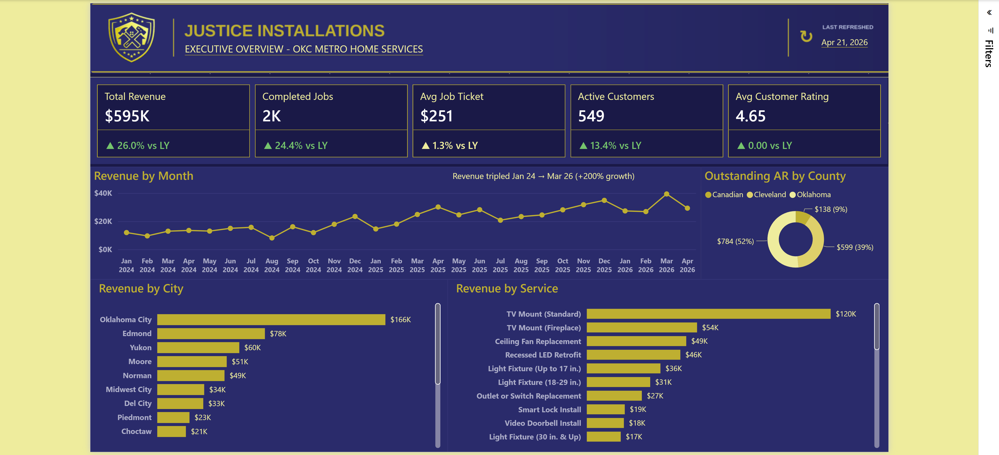
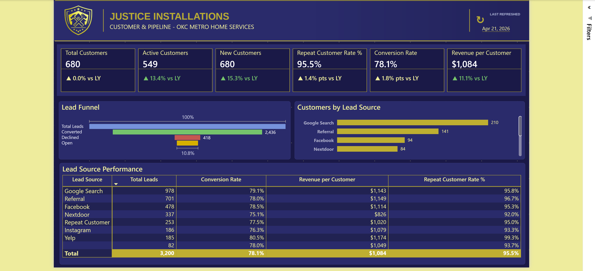
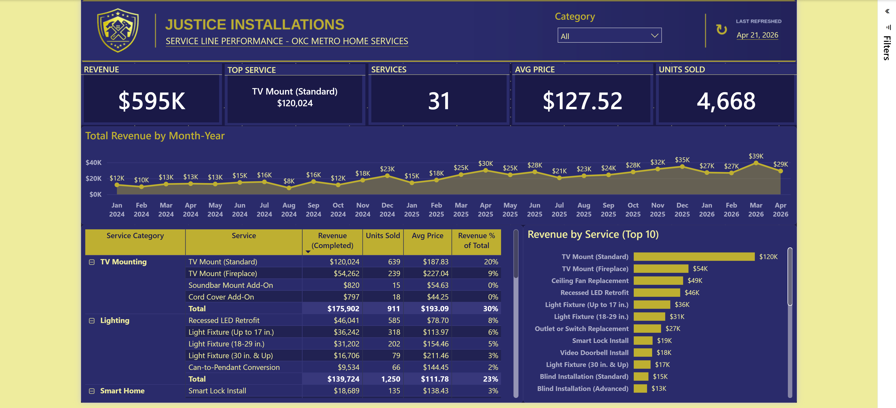

Operations and pipeline analytics for a home-installation contractor in the Oklahoma City metro — from a SQL Server warehouse, through a TMDL semantic model, to a five-page operational report.
A home-services installer lives or dies on two numbers: how many inbound requests turn into booked jobs, and how much each job is worth. Everything else — technician utilisation, service mix, geography — is downstream of those. The trouble is that the two numbers live in different systems. Leads arrive through a website form, a phone call or a referral. Jobs get scheduled and completed. Invoices get raised and paid. Nobody had one place to ask:

Three facts and five conformed dimensions in a dw schema, scripted
one object per file. The model connects through two Power Query parameters rather than a
hard-coded connection string, and a git clean filter substitutes a placeholder hostname at
staging time — so the repository has never contained a real server name.
| Fact | Grain | Dimensions referenced |
|---|---|---|
| dw.FactJobs | one row per job | Customer, City, Technician, Date |
| dw.FactInvoiceLines | one row per invoice line | Customer, Service, City, Technician, Date |
| dw.FactLeads | one row per inbound request | Customer, City, Date |
The report connects as PBIReader, whose entire permission set is one
GRANT SELECT ON SCHEMA::[dw]. No db_datareader — that role would
also expose every other schema in the database.
dw.DimCustomer carries name, email, phone and consent flags because a real
warehouse would. The values are synthetic, and the semantic model does not surface them.
Time Intelligence holds seven items — PY, YoY,
YoY %, YTD, MTD, Rolling 12M — built on
SELECTEDMEASURE(), so time intelligence is seven definitions rather than seven
variants of every base measure.
Revenue, Jobs & Operations, Leads & Pipeline, Customers, Time Intelligence and Geographic. The YoY set follows a fixed three-measure pattern, so adding a KPI to a card row is mechanical rather than bespoke.
Every figure below is computed by the model in this repository. None of it is illustrative.
This is the one that inverts the usual assumption. Self-service intake is supposed to be the cheap, scalable channel. Here it is the leaky one.
| Channel | Leads | Converted | Rate | Declined | Stalled |
|---|---|---|---|---|---|
| Phone / manual | 2,230 | 1,808 | 81.1% | 10.6% | 8.3% |
| Online form | 970 | 628 | 64.7% | 18.7% | 16.6% |
A 16.3-point gap. Online leads stall at exactly 2.00× the manual rate and are declined at 1.76×. And it is not a start-up wobble — the gap holds every year the data covers: 20.2 points in 2024, 14.2 in 2025, 13.5 so far in 2026. The form is improving and has never closed the gap.
The pattern matters as much as the size. High declines and high stalls together implicate request quality rather than follow-up effort: the form is letting people submit requests that cannot be quoted as written.
Outstanding AR is $1,520.20 against $595,242.05 of revenue — 0.26%. Essentially everything invoiced gets paid. There is no receivable story here.
The leak is entirely upstream. Of 3,200 inbound requests, 764 (23.9%) never become jobs — and of those, 346 are neither converted nor declined. They are sitting in Needs Clarification, Pending Review or New. Nobody said no. Nobody said yes.
At the average ticket of $251.05, those 346 stalled requests represent roughly $87,000 of revenue that has neither been won nor formally lost.

| Category | Revenue | Share |
|---|---|---|
| TV Mounting | $175,902.00 | 29.55% |
| Lighting | $139,724.20 | 23.47% |
| Smart Home | $61,309.85 | 10.30% |
| Fans | $61,286.95 | 10.30% |
| Remaining five | $157,019.05 | 26.38% |
The top two categories are 53.0% of the business. A single line item — TV Mount (Standard) — is $120,024.45, or 20.16% of all revenue, on 639 units. Thirty-one services are offered; the concentration sits in a handful.
| Group | Techs | Jobs | Share | Rating | Duration | Cancel |
|---|---|---|---|---|---|---|
| All Services | 2 | 2,034 | 81.4% | 4.653 | 108.2 min | 4.8% |
| TV Mounting / Smart Home | 1 | 255 | 10.2% | 4.574 | 104.3 min | 4.7% |
| Lighting / Fans / Electrical | 1 | 211 | 8.4% | 4.659 | 112.9 min | 4.3% |
Two generalists carry 81% of jobs and $480,699.90 of revenue. The two specialists take 466 jobs between them — and are not measurably better at the work they specialise in. Ratings differ by less than a tenth of a star, durations by a few minutes, cancellation rates by fractions of a point. Whatever the specialist designation was meant to achieve, the data does not show it achieving it.
Four decisions the findings support, each with the evidence behind it and the number that would show it worked.
Evidence: Online leads are declined at 1.76× and stall at 2.00× the manual rate. Both failure modes elevated together implicates the request, not the response.
Action: Make the form collect what a quote actually requires — mount surface and stud type for TV work, fixture height and existing wiring for lighting, a photo. Add required fields rather than optional ones. Every field that stops an unquotable request from being submitted is worth more than a faster reply to it.
Success metric: Online conversion within 5 points of manual, and Needs Clarification under 4% of online leads.
Evidence: 10.8% of all leads are in a non-terminal state. At $251.05 average ticket that is roughly $87,000 unresolved.
Action: Give Needs Clarification, Pending Review and New a maximum age — say seven days — after which the lead is either quoted or explicitly declined. A declined lead is a clean number. An indefinitely open one is not.
Success metric: Non-terminal leads under 3% of the pipeline at any month end.
Evidence: One category is 29.55% of revenue; one line item is 20.16%.
Action: This is a strategy question the data raises but cannot answer. Either lean in — price the TV Mount tiers deliberately, build the attach-rate motion for soundbars and smart devices — or deliberately grow Lighting and Smart Home to dilute it. What is not defensible is holding a fifth of revenue in a single SKU without having chosen to.
Success metric: Either TV Mount (Standard) attach rate up, or its revenue share down. Movement in a chosen direction.
Evidence: Specialists handle 18.6% of jobs and show no rating, duration or cancellation advantage on their own categories.
Action: If specialisation is real, route work to it — the scheduler should prefer the specialist for their categories, and their share of those categories should rise. If it is not real, drop the label and schedule purely on availability, which is effectively what is happening now anyway.
Success metric: Either specialist share of their own categories above 50%, or the designation removed from the technician dimension.
The most useful thing a portfolio project can document is the decision it has not made yet.
DimDate is shared by all three facts, and each fact
carries several date keys — FactJobs has requested, start and end;
FactInvoiceLines has issue and start. That is the classic setup for a
role-playing dimension.
But the model joins each fact to Date on exactly one of them:
StartDateKey, IssueDateKey and RequestedDateKey
respectively. There is one inactive relationship — Invoice Lines.StartDateKey →
Date.DateKey — and no measure activates it.
USERELATIONSHIP appears nowhere in the model.
So "revenue by job start date" versus "revenue by invoice issue date" is not currently a question the report can answer, even though every key needed to support it is present. Booking lag and revenue recognition timing are therefore invisible, which is a real limitation on a report whose central finding is about intake.
Documenting this rather than quietly shipping around it is deliberate. The relationships file is 13 lines of TMDL in source control — anyone reviewing this repository can verify the claim in about thirty seconds, which is the point of keeping the model as text.
All data is synthetic — no real customer, technician or job information. The tenant this is published to does not permit anonymous embedding, so rather than a cut-down public iframe the full report is here to download and open yourself.
The .pbix opens in Power BI Desktop, which is free. Every slicer and
cross-filter works, and the data travels with the file — no database or account needed.
Desktop also opens the model itself: 12 tables, 13 relationships, 106 measures, and the DAX behind every figure quoted on this page.

I build analytics that hold up under questioning — where every number on a page can be traced back through a measure, a view and a table to the row that produced it.
Justice Installations is a complete vertical slice of that: a synthetic SQL Server warehouse, a TMDL semantic model kept in source control as plain text, and a five-page report that ends in recommendations rather than charts. Building it also surfaced a measure that was quietly wrong — a conversion rate dividing jobs by leads instead of converted leads, which read plausibly at the grand total and returned over 100% the moment it was sliced by channel. Finding that is the work.
I'm open to conversations about business intelligence and analytics engineering roles.